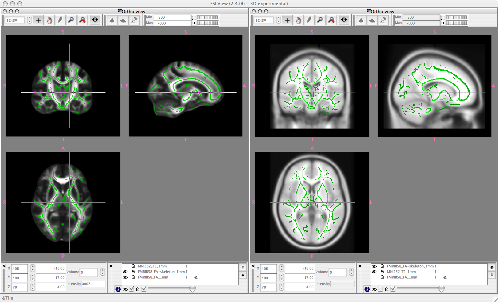

FMRIB58_FA standard space image
The FMRIB58_FA is a high-resolution average of 58 well-aligned good quality FA images from healthy male and female subjects aged between 20-50. The original DTI resolution was approximately 2x2x2mm.
The FMRIB58_FA_1mm image is in the same space as the MNI152 standard space image, at 1x1x1mm resolution. It was created by iteratively registering the raw FA images. First all raw images were affine-aligned to the MNI152 using FLIRT. The mean of these aligned images was then taken and all raw FA images were then aligned to this mean, using the IRTK nonlinear registration software. The mean was recreated and the nonlinear registration repeated. Again, the mean was taken, and the nonlinear registration repeated a final time, this time with slightly higher amount of warping allowed. The final mean FA image is scaled by a factor of 10000 from the original theoretical range of 0:1.
The FMRIB58_FA-skeleton_1mm image is derived from the FMRIB58_FA_1mm by standard TBSS skeletonisation, followed by thresholding at 2000 (i.e., FA=0.2).
Below: FSLView snapshots. Left: the FMRIB58_FA_1mm mean FA image underneath the derived mean FA skeleton FMRIB58_FA-skeleton_1mm. Right: the same skeleton overlaid onto the MNI152 standard space image sampled at 1mm resolution.
